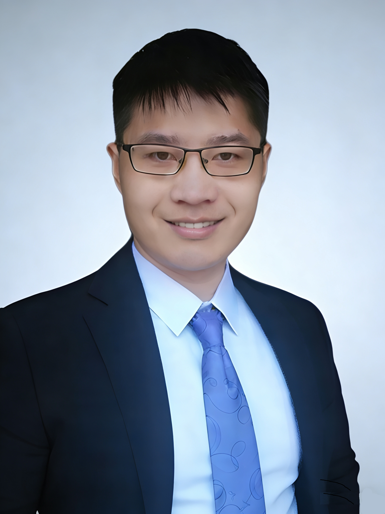
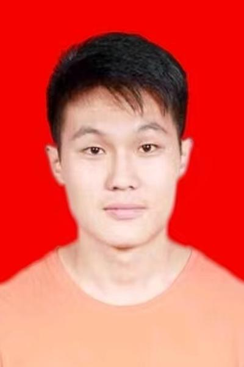
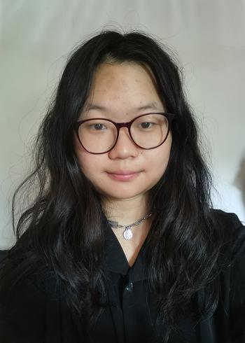
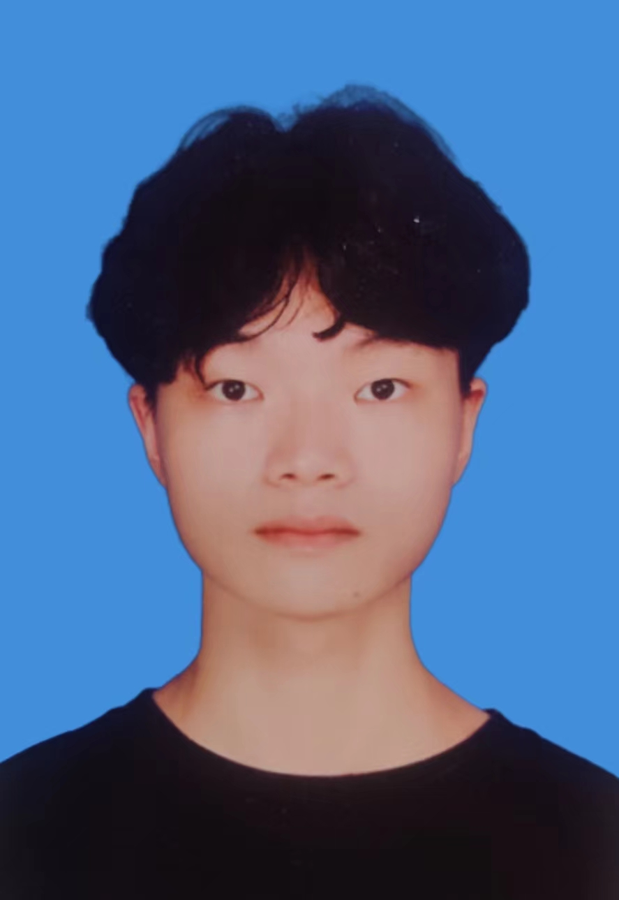
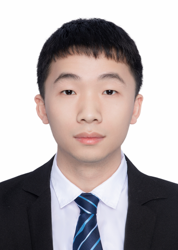
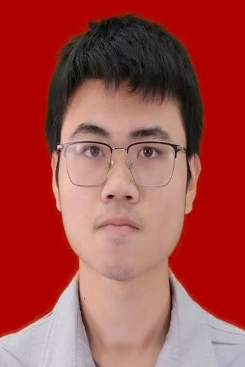
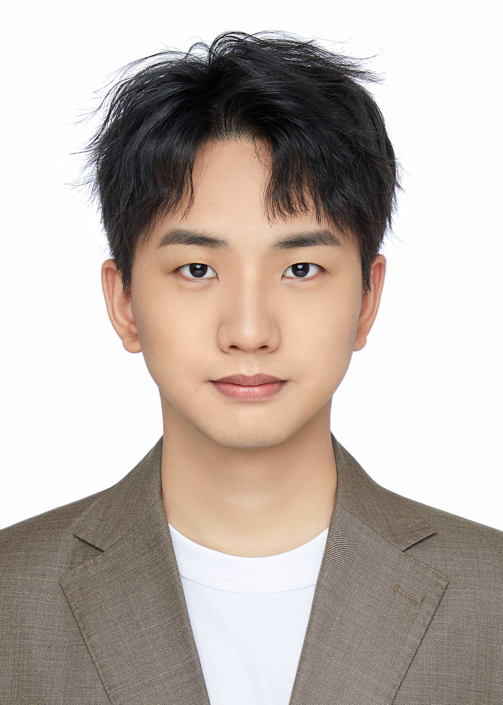
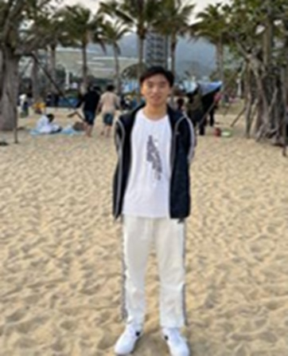
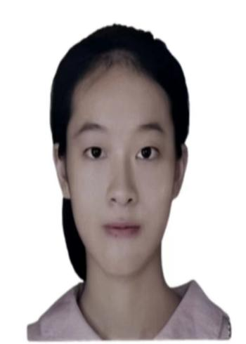

Principal investigator

陈 刚 · Gang Chen
Dr. Gang Chen received his Ph.D. from UC Davis and was a postdoctoral researcher at Nanyang Technological University, Singapore. His research interests span machine learning, formal methods, control theory, and signal processing, with a focus on interpretable fault diagnosis and trustworthy cyber-physical systems. He leads the SRIS Lab in developing unified methodologies that combine Signal Temporal Logic (STL), causal inference, and physics-guided priors for building smart, reliable, and interpretable systems.
Postdoctoral Fellows
Khan Tasir
Applied Mathematics, Wind prediction
PhD Students

逯鹏宏
Mechanical Engineering
袁俊琳
Mechanical Engineering
劳振鹏
Mechanical Engineering
岑伟洪
Mechanical Engineering
Master Students

朱涵悅
Electronic Information Eng.

张稼瑞
Electronic Information Eng.

张艺栎
Electronic Information Eng.

林政豪
Mechanical Engineering
陈明宇
Mechanical Engineering
唐超
Mechanical Engineering
贾远峰
Mechanical Engineering

殷楚钦
Mechanical Engineering
尹鹏宇
Electronic Information Eng.
Undergraduate Students
杨沛希
Smart Manufacturing Eng.

路延宇
Smart Manufacturing Eng.

贾凯同
Smart Manufacturing Eng.
Alumni
李杜· Du Li
Master Student, 2022–2025
李才 · Cai Li
Master Student, 2022–2025
曾子越 · Ziyue Zeng
Master Student, 2022–2025
田若瑶 · Ruoyao Tian
Undergraduate, 2022–2023
张 晨 · Zhang Chen
Undergraduate, 2023–2025
张 然 · Zhang Ran
Undergraduate, 2023–2024